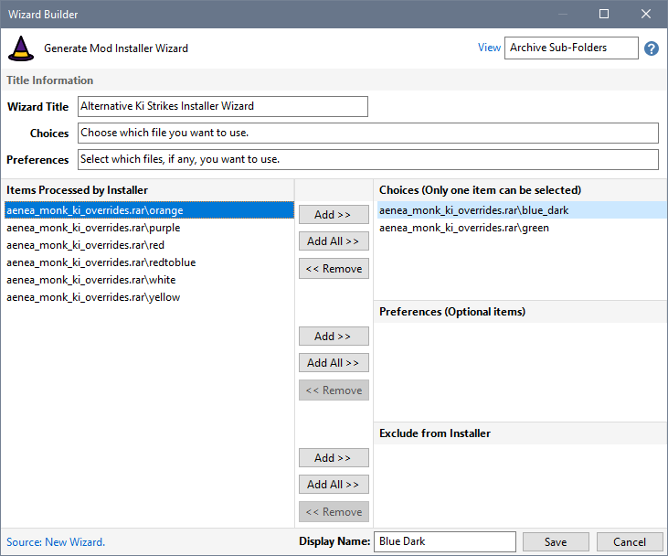
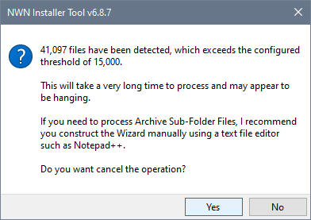

Use the Installer Wizard Builder to provide more control over which files are used when a Mod Installer is created.

Wizards can also be defined as part of a Project's Rule Definition in Download Project Rules.

|
|
Description |
|
View |
Specifies whether you want Files, Archive Sub-Folders or Archive Sub-Folder Files shown in the list of items processed by the installer. An archive is a compressed file created by 7-Zip, Rar, Zip, etc. If you select Archive Sub-Folder Files and the Wizard Builder File Threshold is exceeded, you are asked whether you want to cancel the operation.  My advice is to always answer Yes unless you are prepared to wait patiently. In the above example, it can take between 5 and 10 minutes to complete. You can alter the threshold on Configuration page in Advanced Settings to suite your machine's performance and your level of patience. |
|
Wizard Title |
This is the text that will be displayed in the Wizard's Windows Title bar. |
|
Choices |
This is the text that will be displayed in the Wizard's area above the list of file or folder choices that can be made. |
|
Preferences |
This is the text that will be displayed in the Wizard's area above the list of file or folder preferences that can be selected. |
|
Items Processed by Installer |
Lists all the files, archive sub-folders or archive sub-folder files belonging to the selected Mod that will be processed by the Create Installer operation. |
|
Choices List |
When Create Installer is run, this list of files or folders is displayed by the Wizard. Only one of the items can be selected. Use this list to specify items that are mutually exclusive. |
|
Preferences List |
When Create Installer is run, this list of files or folders is displayed by the Wizard. You can specify none, one or more files to be processed by the Create Installer operation. Use this list to specify optional items. |
|
Exclude from Installer |
Use this list to specify files or folders that must be excluded (ignored) by the Create Installer operation. See Work with the Excludes map for an alternative way to exclude items when creating Installers. |
|
Display Name |
The Display Name box shows the name that will be used by the Wizard when Choices and Preferences messages are displayed by Create Installer. The name is also used to sort the Choices and Preferences items listed in the message. You can edit this name if the default name is not to your satisfaction. You can select a Choices or Preferences item and press Return to edit the Display Name. You can press Return when editing a name to save the text and go back to the selected Choices or Preferences item. You can also click the Display Name heading text to toggle editing the name in the box. |
Build a Wizard for the Custom Menus Mod
Build a Wizard that uses File Preferences
Build a Wizard using Archive Folders
View Create Installer Wizards results
|
|
Click the menu illustration to view information about other tools. |